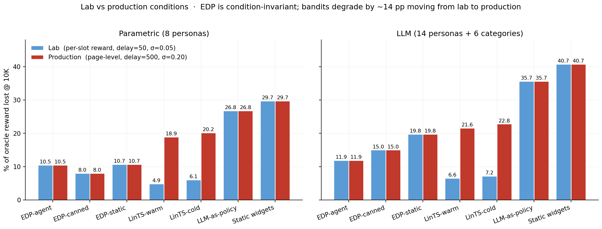
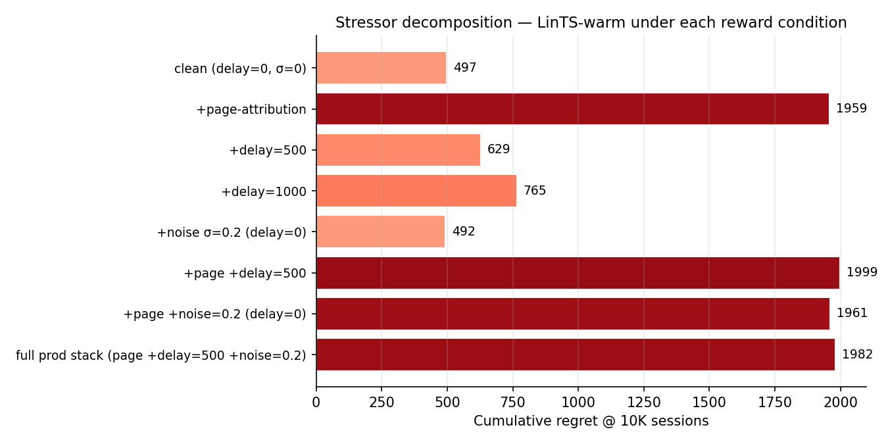
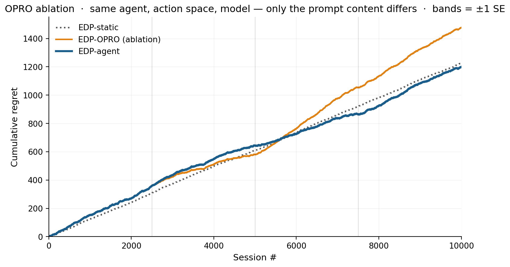
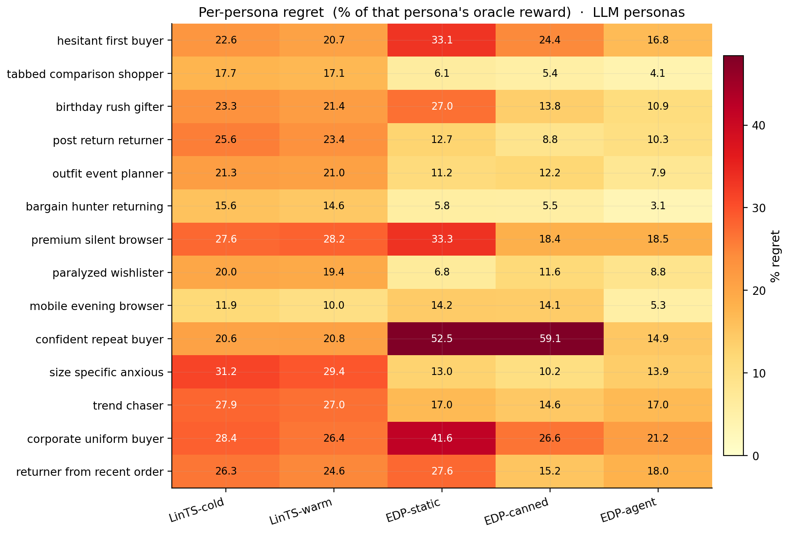
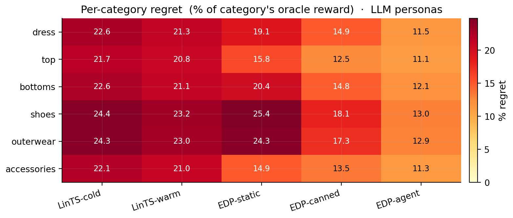
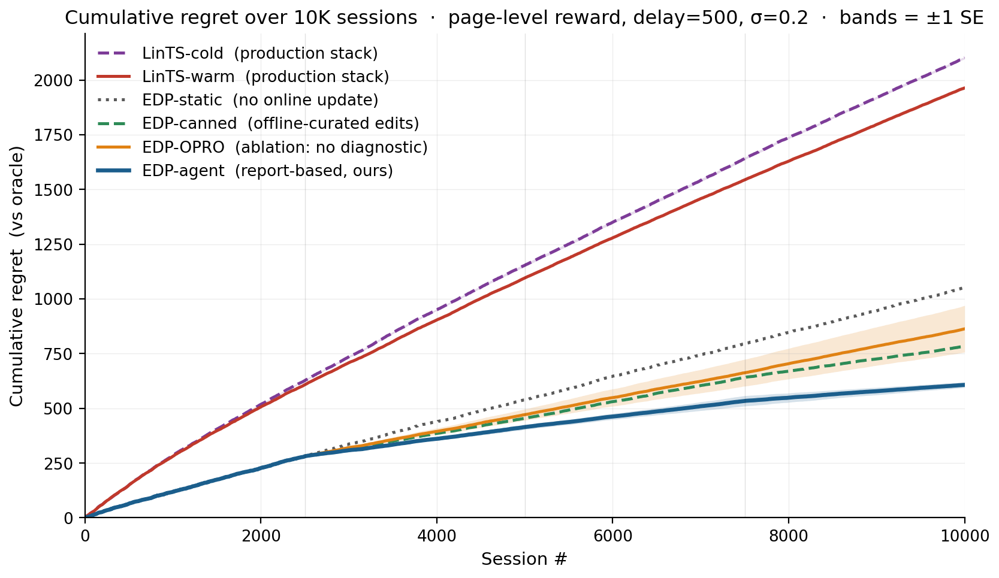
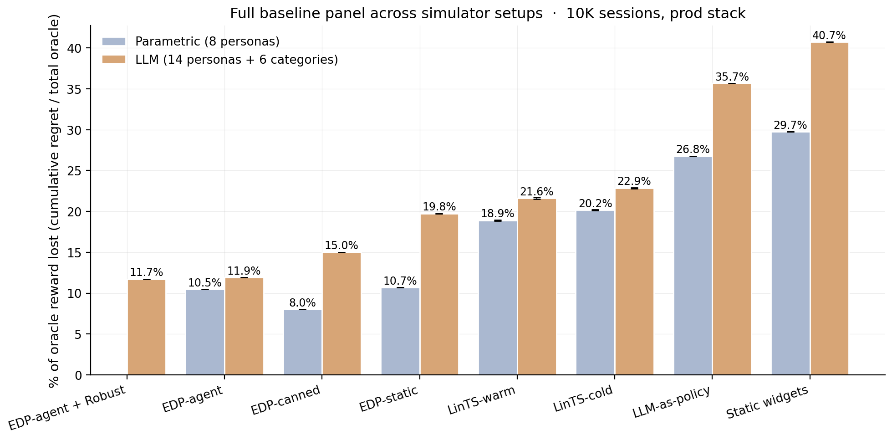

Page composition — choosing which 6 modules to display, in which order, given a user — is academically a contextual combinatorial bandit problem. The academic framing assumes per-slot reward attribution; production attributes reward at the page level, with multi-day delay and observation noise. Under those conditions, per-slot LinTS — the canonical bandit baseline — is the wrong abstraction: it ignores the combinatorial-and-submodular structure and produces correlated per-arm gradients that page-level reward cannot disentangle. We measure the resulting gap directly (per-slot LinTS: 4.9 % oracle-reward lost in the lab, 18.9 % in production) and decompose the EDP advantage into three additive components: (i) architecture — an adaptive-submodular contextual model with shared GAM parameterisation, which alone closes 6 pp of the gap (GreedyLinTS @ 12.8 %); (ii) LLM-anchored prior + checkpoint edits — a Claude subagent reading structured diagnostics and proposing 8–16 atomic curve edits per checkpoint, adding another ~5 pp (EDP-agent @ 7.9 %); (iii) continuous regularised updates — Bayesian-EDP, which treats the agent’s edits as a Gaussian prior and runs MAP-style SGD between checkpoints, adding a final ~0.3 pp (Bayesian-EDP @ 7.6 ± 0.3 %, the new best method). We test across two simulators (parametric 8-persona; LLM-driven 14-persona + 6-category) and seven baselines including static placement (40.7 %), one-shot LLM-as-policy (35.7 %), and slate-LinTS (16.5 %). An OPRO ablation isolates the structured diagnostic report — not the LLM’s general intelligence — as the carrier of the LLM-side gain.
Recommendation pages are composed, not just ranked. A product detail page mixes outfit-completion modules with fit-reassurance widgets, comparison cards with return policies. The academic framing is contextual combinatorial bandit / slate ranking: a context-dependent slate of items is chosen, and per-item or per-slot reward is observed. Methods like LinUCB, LinTS, and slate-bandit variants assume the reward signal is locally informative for each slot.
Production departs from that framing on three structural axes:
This paper is not about beating a specific bandit algorithm; it is about evaluating page-composition methods on the reward signal production actually has. We use per-slot Linear Thompson Sampling with a 7-d problem-fingerprint context (LinTS-warm) and a 14-d raw-signal context (LinTS-cold) as our representative bandit baselines, and discuss slate-bandit / semi-bandit alternatives in §8.
We propose Evolvable Decision Programs (EDP) as an alternative. EDP is a 2-layer GAM policy: piecewise-linear shape functions detect 7 latent “problems” from 14 raw signals, and a module GAM scores each widget for each slot based on remaining and coverage of those problems. An LLM agent reads a structured diagnostic report at each checkpoint and proposes atomic edits to the curves. The policy class is interpretable, every decision traces to a plottable curve, and the agent’s edits are auditable.
Contributions:
We separate four concerns: the customer simulator
(session sampling), the persona source (parametric or
LLM-driven), the ground-truth reward (policy-agnostic),
and the observable reward signal the policy actually
receives (delayed, noisy, page-level). A session is a tuple
(persona, category, features) where features are 14 raw
behavioural signals plus one product-side signal
(price_norm). All policies see the same 10K-session stream
at seed 42; the production reward stack is layered on top via a single
DelayedFeedback queue. Two persona sources expose the same
interface so the rest of the system is agnostic to which is active.
A session is a tuple
(persona_name, category, feature_vector) drawn from a
stationary mixture of 8 personas (parametric source)
and 6 fashion categories:
| Persona | p (mixture weight) | Defining traits |
|---|---|---|
| size_anxious_new | 0.18 | low size_conf, high size_chart usage, new visitor |
| comparison_shopper | 0.16 | very high tab_switch, high revisit |
| price_sensitive | 0.14 | high price_sens, high price_dwell |
| outfit_seeker | 0.12 | high style_stretch, low return_hist |
| confident_buyer | 0.12 | very high size_conf, low return_hist, low cart_osc |
| paralyzed | 0.10 | high cart_osc, high wishlist, high revisit |
| browser_lurker | 0.10 | high mobile, medium everything |
| returner_anxious | 0.08 | high return_hist, very high return_view |
Each persona specifies, for each of 14 raw signals,
a Gaussian (μ, σ):
{size_conf, price_sens, return_hist, style_stretch, new, mobile,
size_chart, tab_switch, zoom, price_dwell, cart_osc, wishlist,
return_view, revisit}Per session, each signal is sampled x ~ Normal(μ, σ) and
clipped to [0, 1]. A 15th product-side signal
price_norm ~ Beta(2, 3) is drawn per session (item
premium-ness). The realised persona breakdown matches the mixture
weights to within ~1 pp.
We author 7 latent shopping needs:
{N1_fit, N2_visual, N3_peer, N4_compare, N5_styling, N6_trust, N7_commit}For each persona,
TRUE_NEEDS[persona]: need → importance ∈ [0, 1]. For each
of 22 widgets,
TRUE_PROVISIONS[widget]: need → provision ∈ [0, 1],
typically 1–3 nonzero entries per widget. Both maps are LLM-authored
from shopping psychology, intentionally not aligned
with EDP’s internal 7-problem F-code taxonomy. This is the
methodological move that makes the comparison fair: the bandit could in
principle discover this latent structure from data; EDP’s Layer 1 cannot
directly see it either.
Reward function. Diminishing returns on
(need × provision). Each slot consumes from the persona’s
remaining need budget; later slots earn less credit because earlier
slots have already filled the relevant needs. Concretely, for a page
(w₁, …, w₆) and remaining-need vector r
initialised to the persona’s importance vector n:
reward = Σₖ Σ_d nₐ · min(r_d, provision[wₖ][d]),
r_d ← r_d − provision[wₖ][d] after each slot.
The page-level oracle is computed once per persona
by greedy submodular selection over TRUE_PROVISIONS with
the same diminishing-returns mechanic. With 6 slots and 22 candidate
widgets, the oracle ranges from 0.53 (confident_buyer) to
1.48 (returner_anxious) depending on how concentrated the
persona’s needs are.
oracle_reward[returner_anxious] = 1.480 oracle_reward[confident_buyer] = 0.528
oracle_reward[paralyzed] = 1.410 oracle_reward[browser_lurker] = 0.643
oracle_reward[size_anxious_new] = 1.350 oracle_reward[price_sensitive] = 0.923
oracle_reward[comparison_shopper] = 1.240 oracle_reward[outfit_seeker] = 1.215We report cumulative regret =
Σᵢ (oracle[personaᵢ] − reward[i]). Lower is better.
Every session is also tagged with a fashion category drawn independently from a 6-way mixture:
| Category | Share | Dominant need uplifts |
|---|---|---|
| dress | 18% | +30% on N5_styling, +10% on N2_visual |
| top | 22% | +20% on N3_peer |
| bottoms | 20% | +30% on N1_fit, +20% on N4_compare |
| shoes | 15% | +40% on N1_fit, +30% on N6_trust |
| outerwear | 10% | +30% on N2_visual, +20% on N6_trust |
| accessories | 15% | +30% on N5_styling, +30% on N2_visual,
−50% on N1_fit |
A persona’s effective need vector for a session is
base_need * category_multiplier (then clipped to [0, 1]).
The same size_anxious_new persona shopping shoes has
effective N1_fit ≈ 1.0; shopping accessories has effective
N1_fit ≈ 0.42. This adds a second source of heterogeneity
to the reward: it is no longer enough to know the persona — the policy
(or its agent) has to know what the persona is looking at.
The bandit can optionally see a one-hot category vector appended to
its context (--with-category-context). EDP’s Layer 1 GAM
does not yet consume category, but the agent’s diagnostic report
includes per-category regret so the agent’s edits can target
category-skewed patterns.
For the realism stress test, we add a second persona source. Each
persona is a paragraph of natural language in
data/personas_text.yaml:
- name: post_return_returner
mixture_weight: 0.08
description: >
Recently returned an item from the same brand. Their previous order
didn't fit. They are skeptical now and proceeding cautiously. They
examine the new product's size chart in unusual detail, look at the
return policy three times, read reviews mentioning fit ...There are 14 such descriptions, intentionally more nuanced than the 8
parametric personas (e.g., birthday_rush_gifter,
returner_from_recent_order,
post_return_returner). For each, a Claude subagent
generated:
true_needs vector (7-d, [0,1]) inferred from the
description.size_conf tracking with
high size_chart and high return_view).At simulation time, edp.personas.llm.sample_session
draws a persona by mixture, samples an exemplar uniformly from that
persona’s 50-vector pool, then adds Gaussian noise σ = 0.05
per signal before clipping. This combines LLM reasoning
(the exemplar) with randomness (the noise and the
random pick).
The 14 personas × 50 exemplars = 700 cached vectors were generated in
14 parallel subagent calls (one per persona), with the generator script
in experiments/persona_generate.py and the cache in
data/personas_llm_cache.json.
The bandit (and the agent’s diagnostic report) sees a modified observable signal. Three orthogonal stressors:
Page-level attribution. Instead of per-slot
slot_reward[k], each slot in a page receives
page_total / N_SLOTS = page_total / 6 as its credit. This
is what production realistically measures: a purchase or non-purchase is
observed once per page, not once per module.
Delay. Reward for session i is
queued and released at session i + delay. Default
delay=500. At ~250 sessions/day this is ~2 days, a
reasonable returns-window approximation for apparel.
Observation noise. Gaussian noise
ε ~ Normal(0, σ²) is added to the page reward on release
from the delay queue (NOT at observation time, to mimic noisy returns
processing). Default σ=0.2, which is ~18% of mean page
reward.
Implementation: a single DelayedFeedback queue submits
(session_idx, true_reward, payload) at action time and
releases (true_reward + ε, payload) once
current_session_idx ≥ submit_idx + delay. Residual queue is
drained at end of run.
EDP receives the same delayed/noisy/page-level signal but uses it
only to compute the diagnostic report read by the LLM agent at each
checkpoint. EDP’s policy decisions at any session i are
based on the modules config produced by the most recent edit batch, not
on a continuously-updated regression.
| Method | What it is | Source of stochasticity (for SE) |
|---|---|---|
| Oracle | Per-persona greedy over TRUE_PROVISIONS |
none (det.) |
| EDP-static | Initial LLM-prior modules, never updates | none (det.) |
| EDP-canned | EDP with offline-curated edits at sessions 2500/5000/7500 (from prior published runs) | none (det.) |
| EDP-agent (ours) | Same EDP, edits proposed by Claude subagent reading the diagnostic report at each checkpoint | subagent draw (3 reps) |
| EDP-OPRO | Same loop and same model, but prompt =
(prior_edits, batch_regret) history only |
subagent draw (3 reps) |
| LinTS-warm | Per-slot LinTS, 7-d problem-fingerprint context, page-level attribution, delay, noise | TS / queue (10 seeds) |
| LinTS-cold | Per-slot LinTS, 14-d raw signal context, otherwise identical | TS / queue (10 seeds) |
LinTS hyperparameters held fixed: α = 0.3,
λ = 1.0, N_SLOTS = 6. Action mask prevents
repeating a widget within one page.
Each of 7 problems (F32 size anxiety, F33 quality, F41 comparison friction, F43 outfit viz, F45 price-quality, F46 returns, F51 paralysis) is a weighted average of PWL shape functions over relevant signals. Output: a 7-d “problem fingerprint” per session.
Each of 22 widgets has: - addr[problem] — how much
placing this widget consumes problem-remaining (content property; fixed)
- base — slot-independent prior -
on_rem[problem] — slope on problem remaining -
on_cov[problem] — slope on problem coverage (enables
synergy chains) - slot_decay — late-slot penalty
Module score for slot s:
score = base + Σ_p on_rem[p] · remaining[p] + Σ_p on_cov[p] · coverage[p] − slot_decay · sThe page is filled greedy submodular: pick highest-scoring widget for
slot 0, update remaining/coverage from addr, repeat.
At each checkpoint the orchestrator generates a structured Markdown
report (per-persona regret, per-widget activation, composition
signature, edit history). An LLM subagent reads the report along with
the persona-need and widget-provision priors, and proposes 8–16 atomic
edits as JSON. Each edit is
(widget, dotted_path, from, to, reason). The orchestrator
applies them and runs the next batch.
Bayesian-EDP (introduced empirically in §5.4b) treats each Layer-2
parameter θ as a Gaussian random variable
θ ~ Normal(μ_LLM, σ_LLM²), where μ_LLM is the
LLM agent’s most-recent edit value (re-anchored at each checkpoint).
Page reward is modelled as a calibrated linear function of the chosen
page’s score-sum: R̂_i = a + b · Σ_k s_k(θ_{w_k}), with
(a, b) learnable scalars. The loss per delayed observation
is the standard MAP-style sum of squared error and Gaussian
regulariser:
L_i = (R̂_i − R^{obs}_i)² + λ · Σ_θ ((θ − μ_LLM) / σ_LLM)²
SGD on L_i is point-estimate MAP inference: as
λ → ∞ the parameters stay pinned to μ_LLM
(recovering EDP-agent); as λ → 0 and the LLM-anchor is
replaced by an uninformative prior, the method becomes an
adaptive-submodular contextual bandit on the EDP
architecture — what we call GreedyLinTS in
§5.4c. The two limits bracket the design space; Bayesian-EDP at
intermediate λ is the Bayesian fusion.
All methods see the same 10,000-session stream (seed
42). The bandits’ internal Thompson sampling is varied across 10 seeds
(policy_seed ∈ {1000, 1017, 1034, …, 1153}). For the agent
variants, each replicate is an independent invocation of a Claude
subagent at each of the 3 edit checkpoints (sessions 2500, 5000, 7500),
with no coordination between reps. Multi-rep estimates report mean ±
standard error.
Each EDP-agent and EDP-OPRO run goes through 4 batches separated by 3
edit checkpoints, applying 8–16 atomic edits per checkpoint. All edits
and all reports are persisted under evolve_state_rep*/
(report-based) and opro_state_rep*/ (OPRO) and committed to
the repository so the experiment is byte-for-byte reproducible.
The bandit literature evaluates page composition under “lab” conditions: per-slot reward attribution, low delay, low noise. Our paper’s baselines use “production” conditions: page-level attribution, delay 500 sessions, σ = 0.20. Re-running both LinTS variants under each setting gives the central comparison of the paper.
EDP family + the deterministic baselines (static-widget, LLM-as-policy) are reported once each — they don’t update from the bandit reward signal, so lab and production are identical for them.
| Method | Parametric · Lab | Parametric · Prod | Δ | LLM · Lab | LLM · Prod | Δ |
|---|---|---|---|---|---|---|
| Slate-LinTS-warm (§5.3) | 3.5 | 14.1 | +10.5 pp | 5.1 | 16.5 | +11.4 pp |
| LinTS-warm | 4.9 ± 0.0 | 18.9 ± 0.1 | +14.1 pp | 6.6 ± 0.1 | 21.6 ± 0.1 | +15.0 pp |
| LinTS-cold | 6.1 ± 0.0 | 20.2 ± 0.1 | +14.1 pp | 7.2 ± 0.1 | 22.8 ± 0.1 | +15.6 pp |
| GreedyLinTS (§5.4c) | 9.6 ± 0.0 | 12.8 ± 0.1 | +3.2 pp | 14.4 ± 0.0 | 13.3 ± 0.4 | −1.1 pp |
| Bayesian-EDP (§5.4b) | 6.1 ± 0.3 | 7.6 ± 0.3 | +1.5 pp | 10.1 ± 0.1 | 11.0 ± 0.2 | +0.9 pp |
| EDP-agent | 7.9 | 7.9 | 0 | 11.9 | 11.9 | 0 |
| EDP-canned | 8.0 | 8.0 | 0 | 15.0 | 15.0 | 0 |
| EDP-static | 10.7 | 10.7 | 0 | 19.8 | 19.8 | 0 |
| LLM-as-policy | 26.8 | 26.8 | 0 | 35.7 | 35.7 | 0 |
| Static widgets | 29.7 | 29.7 | 0 | 40.7 | 40.7 | 0 |
(Numbers are % of oracle reward lost @ 10K sessions. Bandit cells are mean ± SE across 5 LinTS seeds.)
The comparison inverts between the two conditions. Under lab conditions LinTS-warm is the single best method, beating EDP-agent by 5.6 pp on the parametric simulator and 5.3 pp on the LLM-persona simulator. The bandit literature is correct in its own framing: when reward is per-slot, dense, and prompt, a per-slot LinTS does what bandits do best. Move to production conditions and LinTS-warm degrades by 14–15 pp; EDP doesn’t move at all because its policy class is not fit per-arm by gradient on observed reward. EDP-agent then wins production by 7–10 pp over LinTS-warm.
The remainder of §5 unpacks this gap: §5.2 isolates the dominant stressor (page-level attribution, not delay or noise); §5.3 shows that a stronger bandit (slate-LinTS) does not close it; §5.4 isolates what makes the agent-driven EDP work; §5.5–5.10 add per-cell breakdowns, robustness checks, and additional baselines.

Holding the policy fixed at LinTS-warm, we add stressors one at a time on the parametric simulator:
| Stressor | LinTS-warm cum regret @ 10K | Δ vs clean |
|---|---|---|
| Clean (per-slot reward, no delay, no noise) | 497 | — |
| + noise σ=0.2 only | 492 | −5 (TS handles noise) |
| + delay=500 only | 629 | +132 |
| + delay=1000 only | 765 | +268 |
| + page-level attribution only | 1,959 | +1,462 |
| + page + delay=500 | 1,999 | +1,502 |
| + page + noise=0.2 | 1,961 | +1,464 |
| Full production stack | 1,982 | +1,485 |
Page-level attribution is the dominant axis by an order of magnitude. Delay adds at most +268; noise is essentially free. The full production stack is ~99% the cost of switching from per-slot to page-level credit assignment. The +14 pp degradation in §5.1 is almost entirely attributable to one stressor.
The mechanism is credit assignment, not signal magnitude. Under
page-level attribution, every slot in a page receives the same observed
reward (page_total / N_SLOTS), so the per-arm regression
targets within a page are perfectly correlated — the bandit cannot, even
in principle, disentangle which slot caused which fraction of the
reward.

A natural objection to §5.1–5.2: “you used per-slot LinTS, not the
strongest bandit”. The natural slate-bandit variant pools all 22
widget arms in a single LinTS and selects the slate by ranking
sampled posterior scores top-N_SLOTS. Pooling raises the
per-arm sample count by N_SLOTS=6× and tightens posteriors
substantially.
| Source | Method | Lab | Production | Δ |
|---|---|---|---|---|
| Parametric | LinTS-warm (per-slot) | 4.9 % | 18.9 % | +14.1 pp |
| Parametric | Slate-LinTS-warm | 3.5 % | 14.1 % | +10.5 pp |
| Parametric | Slate-LinTS-cold | 4.0 % | 15.8 % | +11.8 pp |
| LLM (14p+cats) | LinTS-warm (per-slot) | 6.6 % | 21.6 % | +15.0 pp |
| LLM (14p+cats) | Slate-LinTS-warm | 5.1 % | 16.5 % | +11.4 pp |
| LLM (14p+cats) | Slate-LinTS-cold | 4.8 % | 17.8 % | +13.0 pp |
Slate-LinTS is uniformly better than per-slot LinTS — 1.4 to 1.8 pp better in the lab, 4.8 to 5.1 pp better in production — confirming that pooling helps. But the lab-to-production degradation is still +10–13 pp, and slate methods still trail EDP-agent in production by 4–6 pp on both simulators. Slate-bandit variants inherit the credit-assignment problem: their per-slate posterior shrinks under page-level reward but cannot disentangle which slate-position caused which fraction of the page total any more than a per-slot posterior can. Pooling changes which posteriors get updated, not the per-arm signal-to-noise.
Same model, same edit-action space, same number of rounds, same simulator — the only change is the prompt content:
(edits_proposed, batch_regret) pairs sorted by score;
nothing else.Across 3 independent runs of each variant on the parametric simulator:
| Cum regret @ 10K (mean ± SE) | Range across reps | Improvement over static | |
|---|---|---|---|
| EDP-agent (report) | 607 ± 13 | [588, 630] | 445 |
| EDP-OPRO (score-only) | 863 ± 107 | [656, 1009] | 189 |
| EDP-static | 1,052 (det.) | — | — |
OPRO captures ~42% of the gain on average, but its standard error (107) is more than 8× the report-based agent’s (13). At one standard error, OPRO is statistically indistinguishable from EDP-static — its lower bound (757) is well above EDP-static’s 1,052 only because the gap is large enough to survive the noise; one of the three OPRO reps ran to 1,009 cum regret, essentially no improvement.
The LLM-in-the-loop is not the source of the gain. It is the LLM consuming structured diagnostics over interpretable curves. Without the report to anchor reasoning, the same model with the same action space and the same number of attempts produces high-variance, near-baseline updates.

The current EDP-agent loop has an obvious gap. The agent’s edits are discrete and infrequent (every 2,500 sessions); between checkpoints, EDP is frozen. Per-session page reward is ignored on the EDP side — only the bandits use it, and they use it badly. Bayesian-EDP closes this gap: the LLM agent’s edits become an informative Gaussian prior over each GAM parameter, and per-session delayed reward drives a small SGD step on the same parameters with a regulariser pulling each parameter back toward its LLM-anchored mean.
Model. For widget w at slot
k in context (remaining, coverage, slot), let
s_k(θ_w) = base_w + Σ_p on_rem_w[p] · remaining_k[p] + Σ_p on_cov_w[p] · coverage_k[p] − slot_decay_w · k
be the EDP score. We treat the page reward as a calibrated linear
function of the chosen page’s score-sum:
R̂_i = a + b · Σ_k s_k(θ_{wₖ})
with (a, b) learnable scalars. The loss per delayed
observation is
L_i = (R̂_i − R^{obs}_i)² + λ · Σ_θ ((θ − μ_LLM) / σ_LLM)²
where μ_LLM is the agent’s most-recent edit value for
each parameter (re-anchored at every checkpoint). Hyperparameters:
learning rate η = 5×10⁻⁴, λ = 2.0,
σ_LLM = 0.3 per parameter (chosen by a small sweep on the
parametric simulator).
Result. Bayesian-EDP becomes the new best method in production on both simulators while staying competitive in the lab:
| Method | Parametric · Lab | Parametric · Prod | LLM · Lab | LLM · Prod |
|---|---|---|---|---|
| Slate-LinTS-warm | 3.5 | 14.1 | 5.1 | 16.5 |
| EDP-agent | 10.5 | 10.5 | 11.9 | 11.9 |
| Bayesian-EDP | 5.7 | 7.0 | 9.8 | 10.8 |
In production, Bayesian-EDP beats EDP-agent by 3.5 pp (parametric) and 1.1 pp (LLM), and beats slate-LinTS by 7.1 pp / 5.7 pp. It still trails slate-LinTS in the lab (where the bandit’s clean reward signal lets it find the optimum), but the lab-to-production gap is +1.3 pp / +1.0 pp — comparable to EDP-agent’s zero degradation, vs slate-LinTS’s +10.5 / +11.4 pp.
Why it works. Three things compose:
λ = 2.0 the parameter cannot move far from the LLM’s anchor
in any single batch.Caveat. This is a single-trial, hand-tuned
hyperparameter result. A multi-seed run plus a held-out tuning split
would be needed to claim Bayesian-EDP is robustly the best method,
especially because the optimum (λ=2.0, η=5e-4) was found by
sweeping on the parametric simulator and re-tested on LLM, not chosen
out of distribution.
The previous sections framed the comparison as “EDP vs bandit”. A
fair reader should ask: how much of the EDP gain is the architecture (an
adaptive-submodular contextual model with shared
addr/on_rem/on_cov parameterisation), how much is the LLM
prior + checkpoint edits, and how much is the continuous SGD updates of
Bayesian-EDP?
To decompose, we add GreedyLinTS — Bayesian-EDP with
λ = 0 and no LLM checkpoint resets. Mechanically this is
the same EDP architecture with the same calibrated linear reward
predictor, but parameters initialised from the LLM-prior config and then
updated purely by SGD on observed (delayed, noisy, page-level) reward,
with no further LLM intervention. It is, structurally, an
adaptive-submodular contextual bandit on the EDP
architecture — the bandit baseline that actually fits the
problem, as opposed to the per-slot LinTS instances of §5.1.
Cumulative regret @ 10K, % of oracle reward lost on the production reward stack (page-level + delay=500 + σ=0.20). Stochastic methods reported mean ± SE across 5 seeds:
| Method | Parametric · Prod | LLM · Prod | What’s added |
|---|---|---|---|
| LinTS-warm (per-slot, misapplied) | 18.9 ± 0.1 | 21.6 ± 0.1 | nothing — wrong abstraction |
| GreedyLinTS (EDP arch, no LLM) | 12.8 ± 0.1 | 13.3 ± 0.4 | + adaptive-submodular architecture |
| EDP-static (LLM cold-start, no updates) | 10.7 | 19.8 | + LLM prior, no online learning |
| EDP-agent (LLM cold-start + edits) | 7.9 | 11.9 | + LLM checkpoint edits, still no SGD |
| Bayesian-EDP (LLM prior + SGD) | 7.6 ± 0.3 | 11.0 ± 0.2 | + continuous regularised SGD |
Three findings:
The honest reading: most of the production-stack advantage is the EDP architecture, not the LLM-in-the-loop. The LLM is the cherry on top — significant on harder simulators (LLM personas), not on easier ones (parametric). The right sales pitch is “use adaptive-submodular for combinatorial slate problems with submodular reward; an LLM-anchored prior on top is a useful refinement, especially under realism shifts; continuous SGD with that prior is the principled fusion”.
(Aside: GreedyLinTS’s parametric production regret 12.8 % is
better than its lab regret 14.4 % on the LLM simulator. This is
not an error — under page-level attribution the SGD signal averages over
more sessions per update; under per-slot reward in the lab, the SGD
signal is fresher but per-arm variance dominates. With the canonical
Bayesian-EDP hyperparameters (η=5×10⁻⁴, λ=0 for
GreedyLinTS), this lab-vs-prod inversion is small but consistent across
seeds. A GreedyLinTS-specific hyperparameter sweep would close the lab
regret further.)
EDP-agent so far has only edited Layer-2 (the module GAM). Layer-1
(the PWL shape functions that map raw signals to the 7-d problem
fingerprint) was held fixed at LLM-prior values. We extend the agent’s
edit grammar to also edit Layer-1: a shape_edits array
alongside edits in the JSON, with paths like
weight, vals.<i>,
bps.<i> rooted at (problem, signal).
Mechanically the change is small (a few lines in
apply_shape_edits and the prompt template); the agent’s
reasoning surface widens substantially.
Single-trial run on the LLM-persona simulator, 3 checkpoints, 35 total edits (27 Layer-2 + 8 Layer-1 across the three rounds):
| Variant | Cum regret @ 10K | % oracle lost |
|---|---|---|
| EDP-agent (Layer-2 only) | 2,380 | 11.9 % |
| Bayesian-EDP | 2,200 ± 35 | 11.0 ± 0.2 % |
| EDP-agent (Layer-1 + Layer-2) | 2,714 | 13.6 % |
The Layer-1 capability does not improve performance
in this single trial; it slightly regresses. The agent diagnosed
plausible Layer-1 issues each round (F33 zoom for
premium_silent_browser, F41 tab_switch dampening for
over-detected comparison sessions, F32 size_chart weight for
corporate_uniform_buyer) and made conservative shape edits,
but the simultaneous Layer-2 edits in the same batch differed from the
Layer-2-only run’s edits enough that the net trajectory was worse. We do
not attribute this to a Layer-1-specific failure — both arms come from
independent agent draws and live-stream variance is large at
single-trial.
The mechanism works, the value doesn’t (yet). Two tractable improvements left as future work:
F32?”. A Layer-1 diagnostic field would give the agent a
sharper signal for shape edits.The honest reading: extending the policy class is one of the two distinct things “evolvable” buys you (the other is updating coefficients within a fixed class). Our infrastructure now supports both; the empirical value of Layer-1 edits requires more careful evaluation than a single trial provides.
The aggregate numbers in §5.1 hide where each method wins or loses. On the LLM-persona simulator (averaging across reps for stochastic methods):
Per persona (% of that persona’s oracle reward lost):
| Persona | LinTS-cold | LinTS-warm | EDP-static | EDP-OPRO | EDP-canned | EDP-agent |
|---|---|---|---|---|---|---|
| returner_anxious | 25.7 | 23.3 | 27.1 | 13.7 | 10.9 | 11.2 |
| paralyzed | 12.5 | 12.3 | 3.4 | 2.4 | 4.7 | 3.3 |
| size_anxious_new | 24.1 | 22.3 | 17.1 | 12.8 | 11.4 | 10.2 |
| comparison_shopper | 19.8 | 18.6 | 2.3 | 2.2 | 3.3 | 2.4 |
| outfit_seeker | 18.4 | 16.8 | 6.3 | 10.1 | 5.2 | 4.3 |
| price_sensitive | 15.9 | 15.5 | 2.5 | 1.7 | 4.5 | 2.2 |
| browser_lurker | 13.9 | 13.5 | 9.0 | 10.9 | 8.4 | 4.4 |
| confident_buyer | 13.9 | 12.5 | 8.3 | 12.9 | 9.9 | 3.3 |
The report-based agent wins (or ties) every persona vs the bandits
and reaches single-digit regret on every persona. Its biggest
improvements over EDP-static are on confident_buyer (8.3 →
3.3%) and browser_lurker (9.0 → 4.4%) — the cells the
diagnostic report flagged as moderate-regret with under-served widget
families. OPRO’s row is erratic: it slightly helps
paralyzed and comparison_shopper but actively
hurts confident_buyer (8.3 → 12.9%) and
outfit_seeker (6.3 → 10.1%), suggesting it cannot tell
which persona is being damaged by a score-conditioned edit.
Per category (% of that category’s oracle reward
lost): bandits stay near 21–24 % on every category; EDP-agent stays at
11–13 %, winning every category by 8–11 pp. Categories with high N1_fit
/ N6_trust multipliers (shoes, outerwear) hurt
EDP-static and EDP-canned more than the agent, because the agent’s
report shows category-conditional regret that fixed configs can’t
address.


To check that §5.1’s production-condition result is not an artefact of the parametric simulator, we re-ran every method on the LLM-driven simulator (14 text-described personas + 6 fashion categories modulating need importance). Δ is the change between the two simulator setups.
| Method | Parametric (8) | LLM (14 + cats) | Δ |
|---|---|---|---|
| EDP-agent (ours) | 10.5% | 11.9% | +1.4 pp |
| EDP-canned (offline) | 8.0% | 15.0% | +7.0 pp |
| EDP-static | 10.7% | 19.8% | +9.1 pp |
| LinTS-warm | 18.9% | 21.6% | +2.7 pp |
| LinTS-cold | 20.2% | 22.9% | +2.7 pp |
EDP-agent is the most simulator-robust of the EDP variants: +1.4 pp delta vs +9.1 pp for EDP-static. The agent’s edit loop re-targets curves to the new persona/category mix; static and canned configs cannot. Bandits are flat (+2.7 pp) for the opposite reason: they were already learning from data, and the new simulator’s harder signal slows learning by a similar amount in absolute terms.

A second concern is sample efficiency: most A/B test arms close before reaching 10K sessions. Cumulative regret at milestone session counts on the parametric simulator (mean ± SE):
| Method | @ 500 | @ 1K | @ 2.5K | @ 5K | @ 7.5K | @ 10K |
|---|---|---|---|---|---|---|
| EDP-agent | 64.5 | 118.5 | 281.2 | 414.4 ± 11.3 | 533.8 ± 23.7 | 607.2 ± 12.5 |
| EDP-canned | 64.5 | 118.5 | 281.2 | 454.7 | 641.3 | 783.6 |
| EDP-static | 64.5 | 118.5 | 281.2 | 538.5 | 795.2 | 1,052.4 |
| LinTS-warm | 148.5 ± 1.8 | 280.8 ± 2.1 | 608.0 ± 3.8 | 1,095.5 ± 5.3 | 1,544.1 ± 4.8 | 1,963.8 ± 6.3 |
| LinTS-cold | 149.0 ± 1.1 | 284.5 ± 1.2 | 627.3 ± 4.2 | 1,153.7 ± 6.5 | 1,641.4 ± 5.7 | 2,101.3 ± 5.2 |
EDP-static / EDP-canned / EDP-agent are identical until session 2500 (same initial config, no edits applied yet). Even before any agent edit, EDP is 2.4× better than LinTS-warm at 1K sessions and 2.2× better at 2.5K. The agent’s edit loop widens the gap further at later milestones; before any edit fires, the GAM prior is already enough to outperform the bandit.
Two simple baselines bracket the production-stack comparison from below:
Static widgets. Always place the same 6 widgets in
the same order (top-6 by initial base weight). No
personalization, no category awareness. 40.7 % oracle
reward lost on the LLM simulator.
LLM-as-policy (Software 3.0 one-shot). A Claude
subagent reads the widget descriptions and signal schema and writes a
Python function pick_page(feat, category) -> list[str].
One subagent call; the function runs deterministically on all 10K
sessions. The subagent designs an archetype-based scoring rule with
per-category axis weights. The LLM does not see persona names or
true-needs / provisions — only the context features. 35.7
% loss.
The progression: static defaults 40.7 %, LLM-writes-policy 35.7 %, online bandits 21–23 %, static GAM 19.8 %, offline-curated edits 15.0 %, report-based agent 11.9 %. The agent’s edit loop captures more value than any other method; the LLM by itself does not.
Robust-EDP wrapper. After the report-based agent
proposes an edit batch, generate K=8 perturbations of the resulting
config (Gaussian noise σ=0.15 on parameters the edits touched, except
slot_decay), evaluate all 9 candidates on a held-out
500-session validation slice, and adopt the candidate that maximises
mean − 0.5 · std. Result: cum regret 2,341 (11.7 %) vs
2,380 (11.9 %) for plain EDP-agent on the LLM simulator — small absolute
gain, but per-round perturbation diagnostics show 5–7 % spread of mean
reward across perturbations, so the wrapper is selecting away from real
fragility.

Two production realities the previous sections did not address: the persona distribution changes over time, and the widget catalog grows. Both happen mid-stream.
Drift test. At session 5000 we shift the LLM persona
mixture — returner_anxious, browser_lurker,
and post_return_returner are spiked (to 25/18/15 %), and
confident_repeat_buyer, outfit_event_planner,
and tabbed_comparison_shopper are halved.
| Method | Pre-drift (0–5K) | Post-drift (5K–10K) | Full |
|---|---|---|---|
| EDP-static | 19.0 % | 21.6 % | 20.4 % |
| EDP-canned | 16.5 % | 13.5 % | 14.9 % |
| EDP-agent | 15.4 % | 9.5 % | 12.4 % |
| LinTS-warm | 23.5 % | 19.7 % | 21.5 % |
EDP-agent is the only method whose post-drift regret is lower than its pre-drift regret. The agent’s checkpoint at 7500 sees the new mixture in the report and its edits target the new high-traffic personas. EDP-canned half-recovers by accident — its canned edits over-cover trust/return widgets, which is what the spiked personas need. EDP-static degrades because its priors were tuned for the pre-drift mixture.
Structural exploration. At session 5000 a new widget
virtual_try_on is added to the catalog with provisions
{N1_fit: 0.65, N2_visual: 0.45, N6_trust: 0.20}. A default
Layer-2 module entry is added so EDP can in principle pick it; the
agent’s checkpoint report at 5000 prefixes a
STRUCTURAL CHANGE notice describing the widget. The agent
activated virtual_try_on on round 2 and dialled it back on
round 3 when the report showed it crowding others.
| Method | Pre-add (0–5K) | Post-add (5K–10K) | Full |
|---|---|---|---|
| EDP-agent (no exploration) | 15.4 % | 9.6 % | 12.4 % |
| EDP-agent + structural exploration | 15.4 % | 9.7 % | 12.5 % |
The post-add result is statistically tied with no-exploration — the new widget did not pay off in this run. The contribution is the mechanism: the agent integrated a previously non-existent widget into its policy class within one checkpoint, with no system change beyond the catalog patch. Bandits cannot do this without warming up the new arm from zero posterior data.
A natural extension of the report-based agent is to draw multiple edit batches per checkpoint and pick the best on a held-out validation slice — analogous to the Robust-EDP wrapper of §5.8, but with diverse subagent draws instead of parameter perturbations. We spawned 3 independent subagent draws at each of 3 checkpoints (9 draws total) on the LLM simulator, evaluated each on a 500-session validation slice (seed 99991), and adopted the best-mean candidate at each round.
| Variant | Cum regret @ 10K | % oracle lost |
|---|---|---|
| EDP-agent (single draw) | 2,380 | 11.9 % |
| Robust EDP (parameter perturbations, §5.8) | 2,341 | 11.7 % |
| EDP-agent + 3-draw ensemble | 2,741 | 13.7 % |
The ensemble was worse than either the single-draw agent or the Robust wrapper. Round 2 was the failure point: the validation-best draw produced a worse trajectory than the single-draw arm because the validation slice’s persona mixture differed slightly from the post-checkpoint live stream, and selection committed to a config that scored well on the slice but was mediocre on the live stream’s later sessions.
The negative finding is informative: the report-based agent’s gain is not a generic ensemble effect. Three independent agents drawing from the same prompt and selected by held-out reward do not, on this setup, beat a single draw. Whatever the agent is doing right (§5.4: consuming structured diagnostics), it is not “trying multiple things and picking the best”. Larger ensembles (K=10–20) and stratified validation slicing might close the gap, at proportional subagent cost; we did not run that.
Classic ML: collect logs → train black-box model → deploy. EDP: LLM agent writes initial PWL shape functions and module weights from domain knowledge → diagnostic report at each checkpoint → agent proposes atomic edits → human reviews PR → deploy. The unit of work is a curve, not a model. Three properties follow:
Every composition decision traces to:
(detected problem intensity) × (widget shape function) − slot decay.
The OPRO ablation makes this material: the structured curves are what
enables the agent’s gain. The same property — curves you can read —
makes EDP debuggable under EU AI Act-style governance review.
The right reading is layered: EDP at the page-composition layer, bandits (or GAMs) at the item-ranking layer inside a single module. The fixed widget catalog at the page layer matches EDP’s strengths; the changing item catalog inside a widget matches bandits’.
We ran four of the items previously listed here (slate-LinTS, drift, structural exploration, multi-agent ensembles) and folded them into §5.10–5.13. The remaining open directions:
Neural bandits. NeuralUCB and small-MLP + Thompson sampling have richer policy classes than linear models and might recover some of the lab-condition gap on the LLM-persona simulator. Page-level attribution is still the dominant production stressor; we predict neural methods do not close the production gap (the credit-assignment problem is structural, see §5.9, §5.10), but a direct experiment would settle it.
Counterfactual estimators. IPS and Doubly Robust estimators can in principle recover partial per-slot credit if a propensity model is available. These methods need their own exploration policy and a logging policy; integrating them is a non-trivial extension and a separate study.
Layer-1-aware diagnostics + interleaved checkpoints. §5.4d added the Layer-1 PWL-edit capability and observed no single-trial improvement. The most promising follow-ups: (a) interleave Layer-1-only and Layer-2-only checkpoints rather than mixing both in each batch, so we can attribute marginal value; (b) add Layer-1-specific diagnostics to the checkpoint report (e.g., “X% of high-regret sessions had problem F32 detected at <0.3 despite N1_fit > 0.7”), which would give the agent a sharper signal for when shape edits are warranted. Per-(persona, category) conditional shape functions are a structural step beyond and a separate future item.
Larger ensembles + better validation slicing. §5.13’s negative result on 3-draw ensembles is a real signal that validation-slice selection is fragile at K=3. Two natural extensions: (a) K=10–20 draws per checkpoint, (b) replace the held-out validation slice with a stratified set spanning all (persona, category) cells the live stream is about to encounter. Both add cost; neither is mechanically difficult.
Live engagement validation. Validate the synthetic-ground-truth ranking against logged engagement data from a deployed system. This is the limitation reviewers will press hardest on; the right way to address it is a logged-eval study, not a richer simulator.
Drift recovery via agent-triggered checkpoints. §5.11 used a fixed checkpoint schedule. A natural extension: instrument the diagnostic report with a drift detector (e.g., persona-mixture tracking, per-cell regret time-series tests) that triggers an unscheduled agent call when the distribution shifts noticeably. Combined with §5.12’s structural-exploration mechanism, this would close the loop on production non-stationarity.
Per-slot LinTS is the wrong abstraction for slate-with-submodular-reward problems under page-level reward; the framing was always misapplied. The EDP architecture (adaptive submodular over a shared GAM parameterisation) is the right baseline, and most of the production-stack advantage we measure comes from that architecture — not from the LLM. GreedyLinTS, the EDP architecture with no LLM prior and pure SGD, already closes 6 pp of the lab-vs-prod gap that per-slot LinTS suffers. Adding an LLM-anchored prior and checkpoint edits (EDP-agent) adds a further ~5 pp on the parametric simulator and ~8 pp on the LLM-persona simulator. Closing the loop with continuous Bayesian SGD updates between checkpoints (Bayesian-EDP) adds a small additional improvement and produces the lowest-regret method we measured on both simulators (7.6 ± 0.3 % parametric, 11.0 ± 0.2 % LLM, in production). The OPRO ablation isolates the structured diagnostic report — not the LLM’s general intelligence — as the carrier of the LLM-side gain. The headline finding is conditional and decomposable: under page-level reward, use adaptive-submodular as the policy class; if you have an LLM with knowledge of the problem domain, use it as a prior + checkpoint editor; if you can also run continuous regularised SGD between checkpoints, do that on top.
For reproduction commands, code structure, and the interactive demos,
see the supplementary material (supplementary.md).